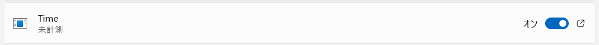

windowsの自動起動(スタートアップ)アプリに標準のクロックを入れたい
背景
- 休日に ueli というランチャーアプリを入れて作業効率化を楽しんでいた
- 普段 windows で作業するとき、ポモドーロタイマーとして標準でついてる クロック アプリを使っていた
- このアプリをスタートアップアプリに登録するのが少し手こずったので備忘録
調査
- サポートページ を確認
[ファイルの場所を開く] のオプションがない場合は、そのアプリを起動時に実行できないことを意味します。
そんなわけないので、いろいろ調べて無理やり登録した
一般的な方法
- 一般的なアプリ(: windows 標準ではないアプリ)をスタートアップアプリに登録する方法
- 要約
- エクスプローラーを開いて
shell:startupを打ち込む - ユーザごとのスタートアップフォルダが開く
- ここに自動起動したいアプリのショートカットを入れることで、自動起動できるようになる
- エクスプローラーを開いて
方針
- クロックアプリの場所を頑張って見つける
- Everything という検索ツールを使う
- これは ueli をいじってるときに入れてた
- ショートカットを作る
- 上記のスタートアップフォルダにショートカットを移す
- 設定アプリで確認したのち、再起動して動作確認
詳細
クロックアプリの場所を頑張って見つける
Everything を使って timer とか clock とかそれっぽい名前をいろいろ調べる
- ノイズが多くて大変
- パスの中に
WindowsAppsが入ってるものを何とか発見- 名前は
Time.exeだった
- 名前は
ショートカットを作る
- エクスプローラーのアドレスバーみたいなところに前の手順で調べたフルパスを張り付けるとそのディレクトリに飛べる
- 試しに起動してみるといつものクロックアプリが起動したのでビンゴ
- 右クリックしてショートカットを作成
- 一筋縄では作れないので、「その他のオプションを確認」から作った
スタートアップフォルダにショートカットを移す
ドラッグ&ドロップで ok
設定アプリで確認したのち、再起動して動作確認
- 「スタートアップ アプリ」に該当のアプリがあることを確認

- 再起動！
- ちゃんと起動することを確認！やったね～～～
感想・学び
- 休日エンジニアとしていい感じの課題だった
- 自動起動アプリ自体は PC の起動を重くするので入れすぎに注意
- こまめに棚卸すべき
- 今まで windows のフォルダ整理をサボっていたが、検索ツールの発達によって一瞬で目的のものが探せるようになったのも普通にハッピー